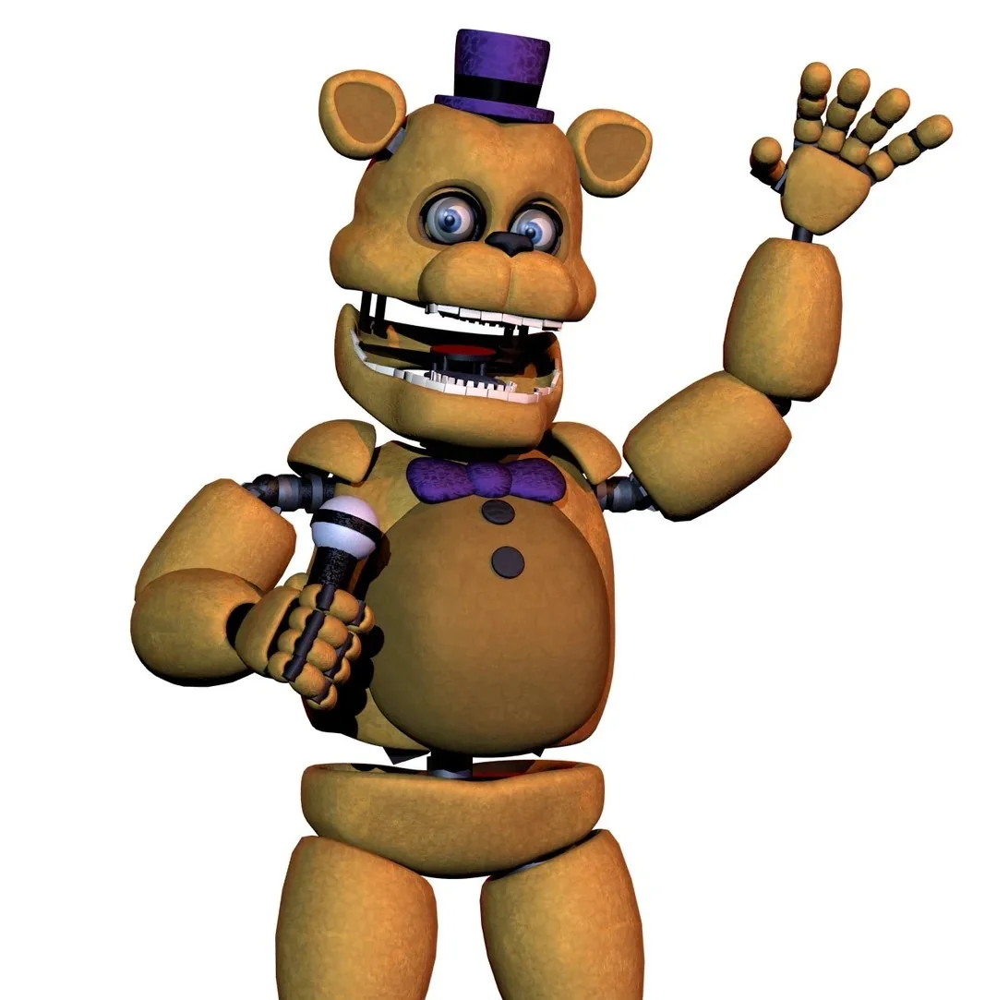
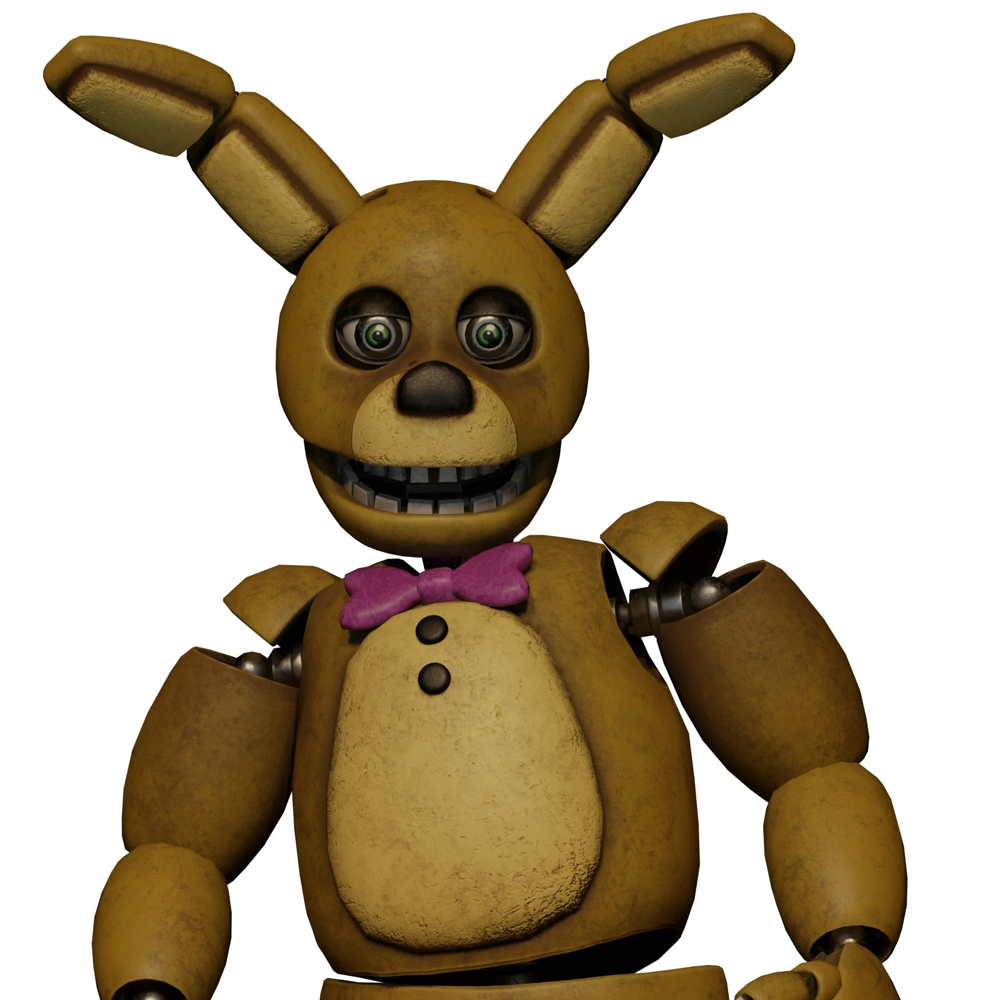

Antes dos mega-complexos de neon e das pistas de boliche do nosso moderno Pizzaplex, a magia da Fazbear Entertainment nasceu em um lugar muito mais simples, mas igualmente especial. Em meados do final dos anos 70, as portas da Fredbear's Family Diner se abriram pela primeira vez, redefinindo o conceito de entretenimento familiar e jantares inesquecíveis.
Fredbear's Family Diner
Onde a magia, a família e a inovação deram seus primeiros passos.
Os Astros Originais
No palco principal da nossa humilde lanchonete original, não tínhamos uma banda completa, mas sim uma dupla dinâmica que roubava a cena e os corações de todas as crianças da cidade:

Fredbear
O carismático urso dourado, sempre com seu icônico chapéu roxo e gravata borboleta, cuja voz animada conduzia as festas de aniversário.

Spring Bonnie
O adorável coelho dourado, braço direito de Fredbear, que sempre trazia um sorriso no rosto e uma melodia no violão.
Inovação e Tecnologia Clássica
Hoje estamos acostumados com IA avançada e robôs que caminham livremente, mas na época da Family Diner, a tecnologia que usávamos era uma verdadeira revolução na engenharia robótica!
"Uma interação próxima e mágica que definiu o nosso padrão de qualidade em 1983."
Fredbear e Spring Bonnie operavam com o clássico sistema de Trajes de Molas (Springlocks). Essa engenharia brilhante e versátil permitia que os personagens funcionassem de duas maneiras: como animatrônicos autônomos no palco, cantando e dançando; ou, através de um ajuste mecânico nas engrenagens internas, poderiam ser vestidos pelos nossos artistas treinados. Isso significava que eles podiam descer do palco, andar pelo salão, abraçar as crianças e servir fatias de pizza diretamente nas mesas!
O Fim de uma Era e o Início de um Império
Com o sucesso estrondoso, os sorrisos se multiplicaram mais rápido do que o nosso pequeno salão suportava. Em 1983, a Fredbear's Family Diner fechou as portas em seu formato original.
Mas não foi um adeus triste! A pequena lanchonete simplesmente ficou pequena demais para os grandes sonhos da Fazbear Entertainment. O encerramento da Family Diner marcou o início de uma nova fase, aposentando os trajes de molas em favor de tecnologias mais modernas e abrindo caminho para a inauguração da nossa primeira grande pizzaria com a turma do Freddy Fazbear que você conhece e ama hoje.
A Fredbear's Family Diner pode estar no passado, mas a alegria daquela época dourada continua viva no coração da nossa empresa!